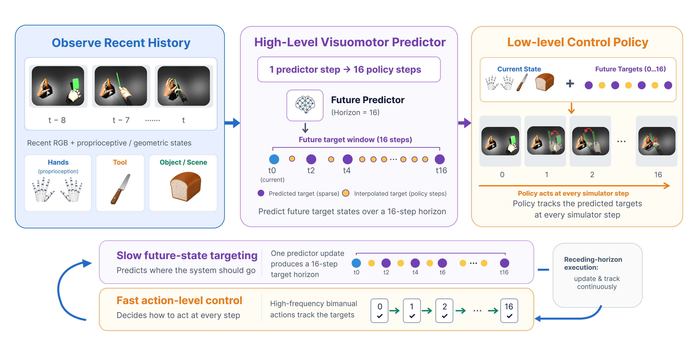

Abstract
Bimanual dexterous tool use remains challenging for robots due to high-dimensional hand configurations and complex hand-tool-object dynamics and contact. Most existing control policies depend on future configuration references provided from demonstrations, while future action-conditioned world models require slow online planning over high-dimensional action sequences. A significant challenge is generating a dynamically meaningful future reference trajectory without relying on privileged states from demonstrations or slow counterfactual planning. We propose DexFuture, a hierarchical system that couples a high-level Future-State Visuomotor Target Predictor with a low-level Target-Conditioned Structured Dexterous Policy. Conditioned on egocentric RGB and proprioceptive/geometric history, the predictor constructs structured hand-tool-object visuomotor embeddings and generates a multi-step future target trajectory. The low-level policy tracks these targets with a target-conditioned per-link transformer. We train the hierarchy using 5,000 simulation rollouts with augmented initial object poses, supervised learning, dataset aggregation, and closed-loop reinforcement learning. On 1,000 test initializations of a bimanual pouring task, predicted targets achieve 72.6% task success compared with 77.6% using privileged future targets, retaining 93.6% of oracle-guided performance. We evaluate sensitivity to input perturbations, predictor components, and RGB-D object-pose estimation, and measure neural inference latency. A single-hand PaXini experiment demonstrates grasping, lifting, and cup tilting on a physical platform.
Contributions
Overview
DexFuture is a hierarchical system for bimanual dexterous tool use that couples a high-level Future-State Visuomotor Target Predictor with a low-level Target-Conditioned Structured Dexterous Policy. It removes the need for privileged future demonstration targets by predicting a coarse future-state target trajectory from visuomotor history. The predicted targets provide long-horizon guidance for the low-level policy to execute high-frequency contact-rich actions.

Method
A. Given recent egocentric RGB observations and proprioceptive/geometric states, we construct structured visuomotor tokens instead of passing dense image patches to the predictor. Hand-link embeddings are obtained by projecting each link into the image and cross-attending to local visual patches, while tool/object embeddings are built by anchor-aligned visual sampling and entity-state/geometry embeddings. B. The Horizon-Conditioned Target Transformer takes the structured embedding history as memory and predicts sparse future structured embeddings at horizons $\mathcal{H}=\{0,2,4,\ldots,16\}$. Future embeddings are first initialized from the latest observed state and modulated with learned future-index embeddings and Fourier horizon encodings, then refined via self-attention and cross-attention to the visuomotor history using AdaLN-Zero transformer blocks. The predicted embeddings are decoded into auxiliary geometric states for supervision, and a $900$-D future target used by the low-level policy. C. The target-conditioned structured dexterous policy consumes the current state and the predicted target, tokenizes the bimanual hand-tool-object system into per-link and scene embeddings, and outputs a bimanual action distribution through a transformer encoder and policy head. D. During receding-horizon execution, a single forward pass of the visuomotor predictor produces a target trajectory over multiple time steps. Intermediate targets are linearly interpolated to allow high-frequency feedback control. The predictor is trained with supervised latent, state, and target losses, while the policy is trained with PPO against a tracking reward.

Results
Bimanual Tool-Use Tasks
DexWM-Style CEM-based MPC planning
Real Robot Deployment
BibTeX
@misc{dexfuture,
title={},
author={},
year={2026},
eprint={},
archivePrefix={arXiv},
primaryClass={cs.RO},
url={},
}